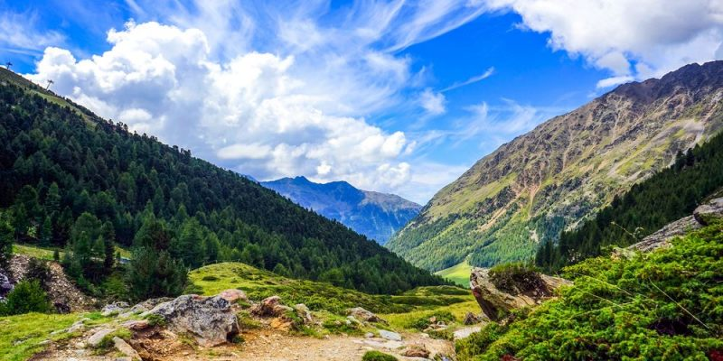
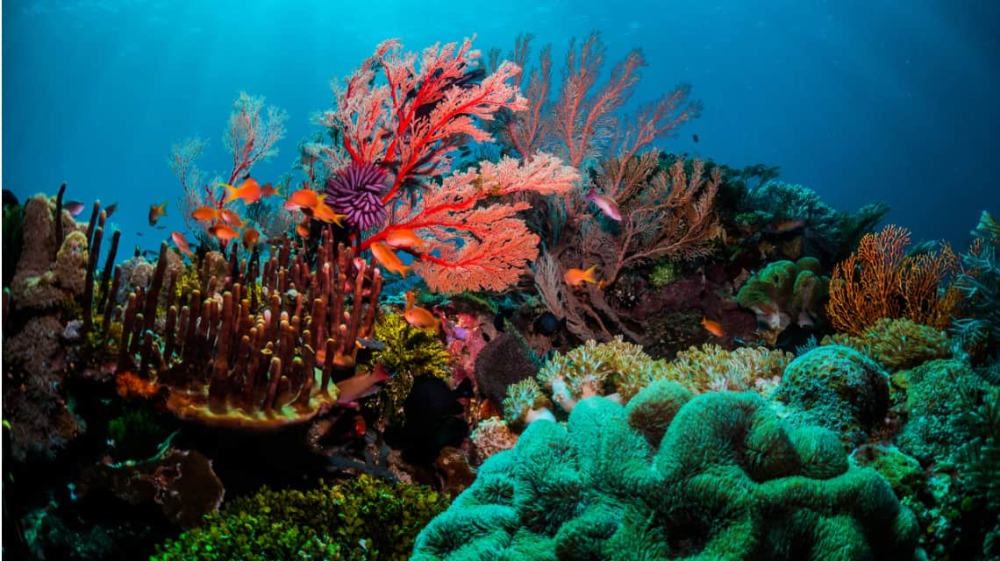
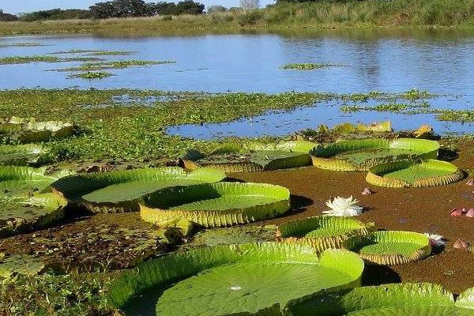
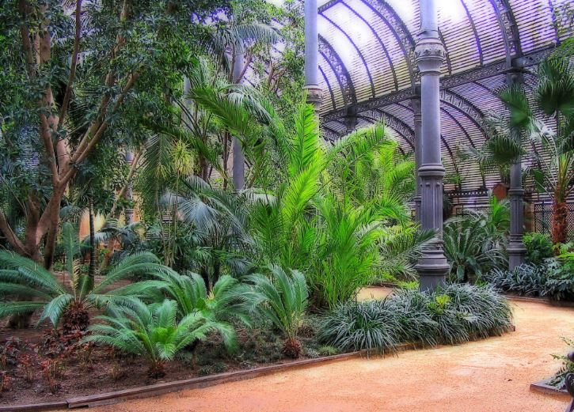

En biología, un ecosistema es un sistema que está formado por un conjunto de organismos, el medio ambiente físico en el que viven (hábitat) y las relaciones tanto bióticas como abióticas que se establecen entre ellos. Las especies de seres vivos que habitan un determinado ecosistema interactúan entre sí y con el medio, determinando el flujo de energía y de materia que ocurre en ese ambiente.
Existe una gran diversidad de ecosistemas en el planeta. Todos están formados por factores bióticos (seres vivos) y factores abióticos (elementos no vivos, como el suelo o el aire). Existen además, distintos tipos de ecosistemas: hay marinos, terrestres, microbianos y artificiales, entre otros ejemplos.
Los ecosistemas terrestres son aquellos ecosistemas que tienen lugar en el suelo firme y en el aire, o en los accidentes geográficos (montañas, etc.), lugares en donde encuentran todo lo que necesitan para nacer, crecer y reproducirse.Se distinguen de los ecosistemas acuáticos y de los mixtos en que no presentan una predominancia de grandes cuerpos de agua, como lagos, ríos o mares. Aun así, presentan diversos rangos de precipitaciones, dependiendo de sus características geográficas y climáticas.
Un ecosistema acuático es todo aquel ecosistema que se desarrolla en un cuerpo de agua de diverso tamaño y naturaleza, lo cual incluye mares, lagos, ríos, pantanos, arroyos, lagunas y costas. En ellos juega un rol vital la naturaleza del agua, sus ciclos, así como el contenido orgánico presente en ella, tanto de fuentes naturales como sedimentarias (los suelos).
Los ecosistemas mixtos son aquellos ecosistemas que comparten características tanto de los ecosistemas terrestres como de los acuáticos, resultando en un ecosistema híbrido entre ellos, donde habitan especies tanto terrestres como marinas conviviendo. Estos ecosistemas se consideran como zonas de transición entre los ecosistemas acuáticos y los terrestres.Aunque puede resultar evidente, los ecosistemas mixtos disponen de una parte acuática que puede proceder de un río, un lago, el mar o el océano, y de otra parte terrestre por la que también se puedan desplazar los diversos organismos que habiten en él.
El ecosistema artificial es aquel que es creado por el propio ser humano, o sea que no existía en la naturaleza. Estos ecosistemas pueden ser modificados fácilmente según la voluntad y la acción del ser humano. En estos ecosistemas se llegan a controlar las diversas condiciones como el tipo de suelo, la lluvia, los organismos, etc. En estos hay factores abióticos y bióticos. Por ejemplo, como elementos abióticos se encuentran las presas, puentes, casas, edificaciones y construcción en general; y como elementos bióticos se encuentran los animales y las plantas
 Inicio Continuar